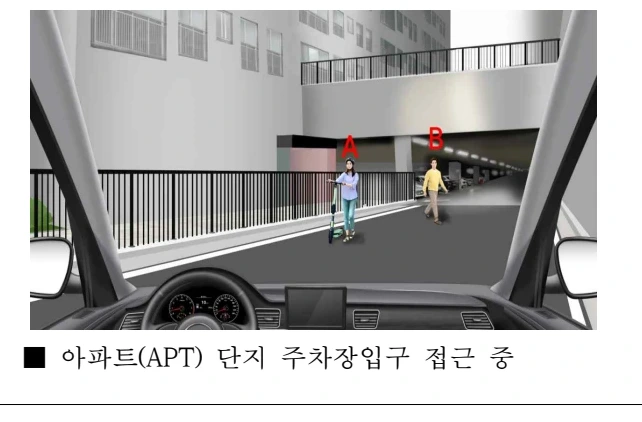

789. Hai cách điều khiển xe an toàn nhất trong tình huống sau là gì?

- ①Liên tục nhấn còi để không cản trở lưu thông của xe.
- ②B phỏng đoán xe sẽ lưu thông theo hướng bên trái nên cứ thế chạy.
- ③Dừng lại cho đến khi B băng qua đường xong để không cản trở việc băng qua đường của B.
- ④Ở nơi không phải là đường đi bộ thì xe được ưu tiên lưu thông nên nhấn còi để B không thể băng qua đường.
- ⑤Nếu đi qua bên cạnh B thì phải đi chậm và giữ khoảng cách an toàn.
Xem đáp án
Đáp án
③ Dừng lại cho đến khi B băng qua đường xong để không cản trở việc băng qua đường của B.
⑤ Nếu đi qua bên cạnh B thì phải đi chậm và giữ khoảng cách an toàn.
Căn cứ
Điều 27 (6) Luật Giao thông đường bộ: Khi vượt người đi bộ ở một trong những nơi sau đây, người điều khiển phương tiện giao thông phải chạy chậm ở khoảng cách an toàn và khi cản trở đường đi của người đi bộ thì phải giảm tốc độ hoặc dừng lại tạm thời để người đi bộ vượt an toàn. 1. Đường không có tim giữa vỉa hè và lòng đường không phân biệt 2. Đường ưu tiên dành cho người đi bộ 3. Các địa điểm không phải đường bộ
Phần căn cứ là bản dịch máy để tham khảo.